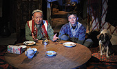
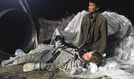
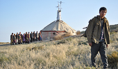
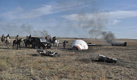

zum Inhalt springen
zur Navigation springen
BAIKONUR
Was vom Himmel fällt, darf man behalten ist das Motto der letzten Bewohner eines kleinen Dorfes, nicht weit von der Raumstation Baikonur.
Ab 01. SEPTEMBER im Kino!
Trailer
Inhalt
Cast&Crew
Bilder
DVD
DVD kaufen




zum Anfang springen